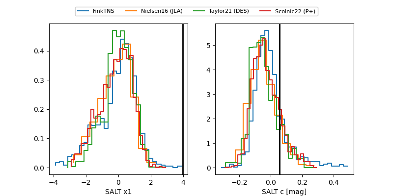

FINK: ZTF25abphhyk
Lasair: ZTF25abphhyk
ALeRCE: ZTF25abphhyk
TNS: 2025xdd
YSE: 2025xdd
ZTF25abphhyk (ztf,fink)
2025xdd (tns,yse)
ATLAS25lgj (atlas)
equatorial (ra, dec) = (349.0989,+24.49810)
galactic (l, b) = (96.8439,-33.51399)

last atlasc=19.11, atlaso=19.39, ztfg=19.17, ztfr=18.94
4 atlasc, 1 atlaso, 7 ztfg, 4 ztfr detections